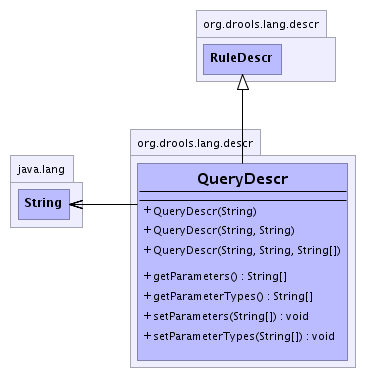

org.drools.lang.descr
Class QueryDescr
java.lang.Object
 org.drools.lang.descr.BaseDescr
org.drools.lang.descr.RuleDescr
org.drools.lang.descr.QueryDescr
org.drools.lang.descr.BaseDescr
org.drools.lang.descr.RuleDescr
org.drools.lang.descr.QueryDescr
- All Implemented Interfaces:
- java.io.Serializable
public class QueryDescr
- extends RuleDescr
- See Also:
- Serialized Form
-
- 
|
Constructor Summary |
QueryDescr(java.lang.String name)
|
QueryDescr(java.lang.String ruleName,
java.lang.String documentation)
|
QueryDescr(java.lang.String ruleName,
java.lang.String documentation,
java.lang.String[] params)
|
| Methods inherited from class org.drools.lang.descr.RuleDescr |
addAttribute, getAttributes, getClassName, getConsequence, getConsequenceLine, getConsequenceOffset, getConsequencePattern, getDialect, getDocumentation, getLhs, getName, getSalience, setAttributes, setClassName, setConsequence, setConsequenceLocation, setConsequenceOffset, setDialect, setLhs, setSalience |
| Methods inherited from class org.drools.lang.descr.BaseDescr |
getColumn, getEndCharacter, getEndColumn, getEndLine, getLine, getStartCharacter, getText, setEndCharacter, setEndLocation, setLocation, setStartCharacter, setText |
| Methods inherited from class java.lang.Object |
clone, equals, finalize, getClass, hashCode, notify, notifyAll, toString, wait, wait, wait |
QueryDescr
public QueryDescr(java.lang.String name)
QueryDescr
public QueryDescr(java.lang.String ruleName,
java.lang.String documentation)
QueryDescr
public QueryDescr(java.lang.String ruleName,
java.lang.String documentation,
java.lang.String[] params)
setParameters
public void setParameters(java.lang.String[] params)
getParameters
public java.lang.String[] getParameters()
setParameterTypes
public void setParameterTypes(java.lang.String[] types)
getParameterTypes
public java.lang.String[] getParameterTypes()